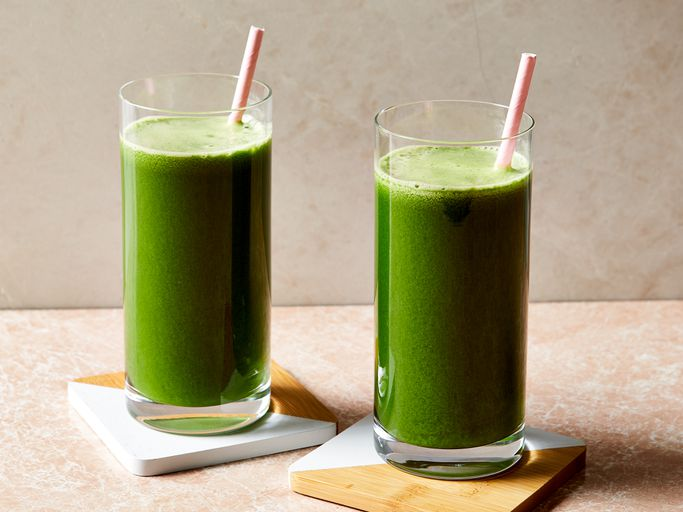

Healthy Green Juice

Prep Time: 10 mins
Total Time: 10 mins
Servings: 2
Description
This green juice recipe with kale, cucumber, celery, apples, and ginger
is great for detoxing after the holidays or whenever you have overdone it!
Adjust fruit and veggie amounts to suit your personal taste.
Ingredients
- 4 stalks celery, leaves removed
- 2 green apples, halved
- 1 cucumber
- 6 leaves kale
- 1/2 lemon, peeled
- 1 (1-inch) piece fresh ginger
Steps
- Gather all ingredients.
-
Process celery, apples, cucumber, kale, lemon, and ginger through
a juicer.
-
Serve immediately or store in a glass jar in the fridge for up to
one day; shake before drinking.
Nutrition Facts
- Calories: 144
- Fat: 1g
- Carbohydrates: 36g
- Protein: 4g
Back to Odin Recipes